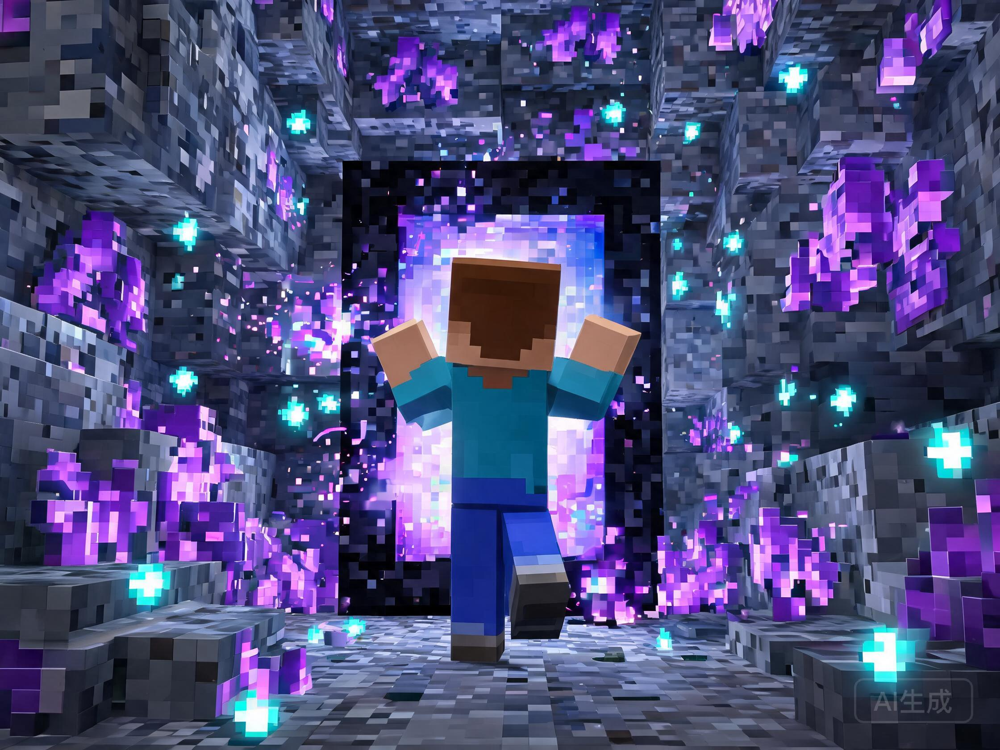

任意门
放两扇门，配一次对——推开门，就是另一个世界。
主世界到下界，出生点到千里之外的基地，从此只需一步。

这是什么玩法？
像哆啦A梦的任意门一样：在两个地方各放一扇门，把它们绑成一对，从此走进任意一扇，就从另一扇走出来。
不敲一个命令
不用记坐标、不用敲指令、不用找管理员。放门、右键、走进去——所有操作都在游戏里顺手完成。
任意世界随便连
主世界连下界、主世界连空岛、出生点连你的基地……只要是两个能放门的地方，就能连成一条路。
原版门的手感
默认触发方式就是"走进门框"，和下界门一样自然。不喜欢误触？在设置里一键改成右键或左键点击触发。
三步上手
从放门到第一次穿越，全程不超过一分钟。点击下方「执行下一步」，看完整过程怎么发生。

门之钥，自己就能合成
连接两扇门需要消耗一把「门之钥」。材料都是日常挖矿就能凑齐的东西，一次合成出 2 把。
找到紫水晶洞，敲紫水晶簇就能掉落。地下矿洞里留意紫色的晶洞墙。
挖铁矿用熔炉烧炼。日常挖矿顺手就攒出来了，老朋友了。
烈焰粉加末影珍珠合成。也可以找牧师村民收购，省得跑下界。
门之钥·实体，让生物也能穿门
用「门之钥·实体」配对的门，玩家和生物都能穿越——把牛羊赶进门运去新牧场、让宠物跟着你搬家，都行。配方更贵，且有效期 48 小时，从合成那一刻起算。
击杀末影人有几率掉落，和猪灵以物易物也能换到。着急用可以先找村民收购。
下界击杀恶魂掉落。掉落物碰到岩浆会烧毁，建议用弓远程解决。
与普通门之钥共用的基底材料，紫水晶洞里敲紫水晶簇即可获得。
走进门的那半秒
传送的瞬间不是"咻一下黑屏换地图"。门会给你完整的仪式感，快而不敷衍。

粒子收拢
门口的紫色粒子迅速向你收拢成漩涡，门框的光变得更亮。
短暂渐暗
视野轻轻暗下去一瞬，像眨了一下眼——比下界门的过场更快。
新世界绽放
落点粒子绽开、传送音效响起，你已站在另一扇门前。全程无需任何操作。
七条规则，看完少踩坑
任意门很自由，但有几条底线规则。都是为了公平和防捣乱，提前知道不吃亏。
传送冷却 3 秒
刚传过去不能立刻传回来。想"来回打乒乓"是不行的，稍等 3 秒再进门。
每人最多 3 对门
达到上限后要先解绑旧的才能绑新的。会员组上限更高，以服务器公告为准。
门被拆，连接断
任意一扇门被破坏（自己拆或被炸），这对门立即失效。放一扇新门重新绑定即可恢复。
骑乘时不能穿门
骑马、坐船、坐矿车时请先下来再进门，不然会被拦住并提醒。
落点自动保护
对面门口如果被方块堵住，插件会自动找旁边的安全位置，绝不会把你卡进方块或虚空。传送失败时还会报出具体是哪个坐标的什么方块挡路，改起来不抓瞎。
你的门默认全服可用
任何人都能穿越你的门——放门的位置就是你的"门禁"。想控制通行，就选个隐蔽或围起来的位置。
实体门：生物每只 5 秒一次
用「门之钥·实体」配对的门，生物每只隔 5 秒才能传一次；正在骑乘或载着乘客的生物不会被传送，防止刷屏和载具事故。
常见问题
其他问题可以到服务器群里问，或者在文档站查详细说明。